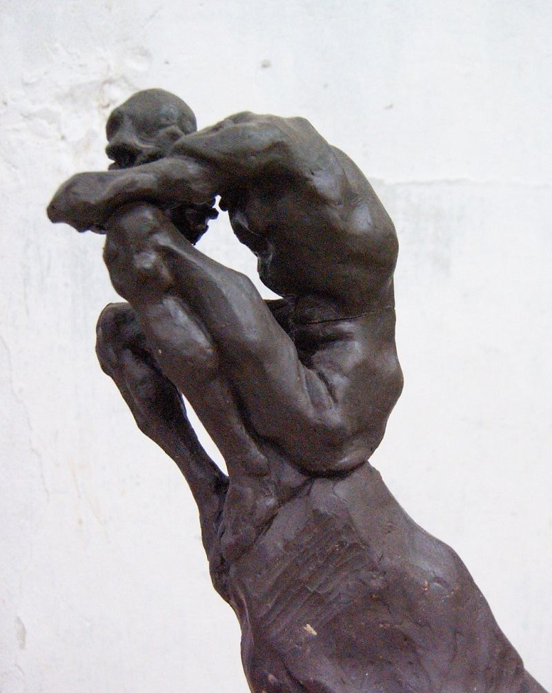
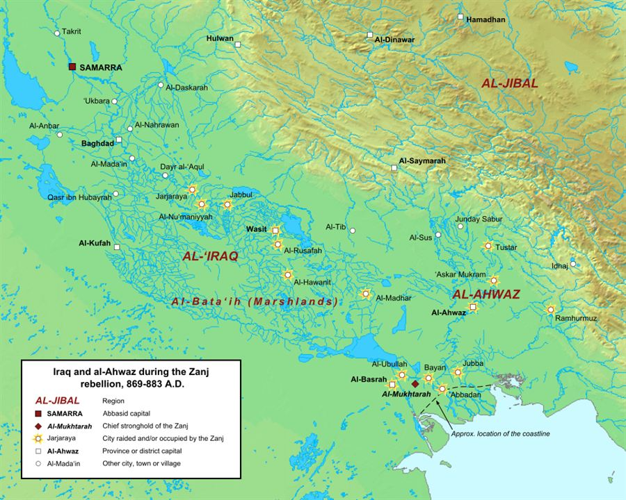
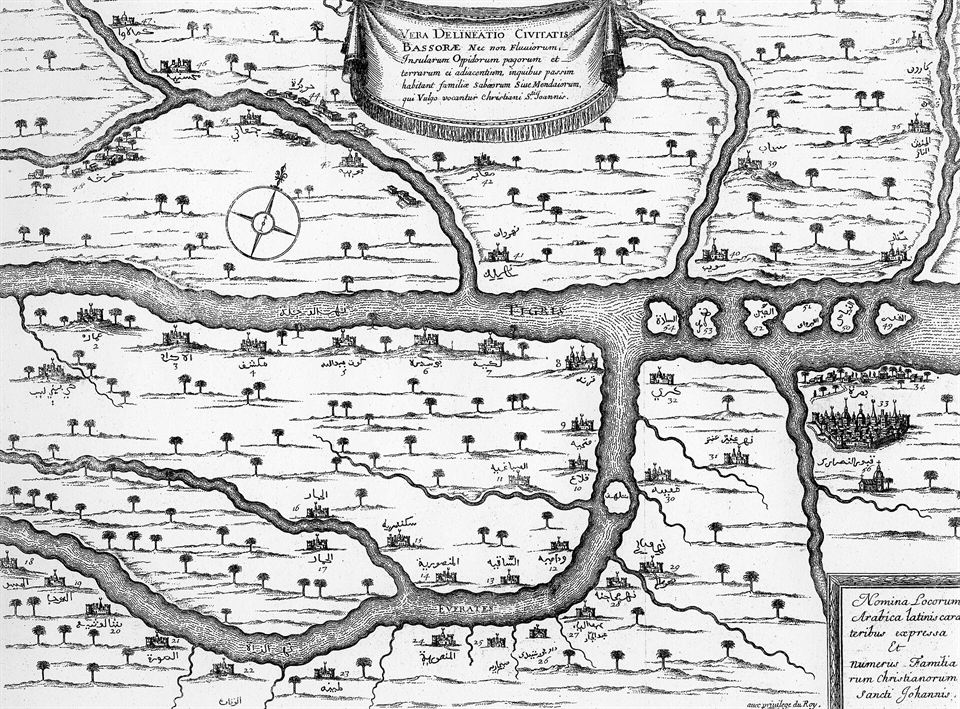

In the salt flats of southern Iraq, tens of thousands of enslaved East Africans — the Zanj — rose up against the Abbasid caliphate, stormed the great city of Basra, and for fifteen years ruled a state of their own. It is one of the largest and most successful slave revolts in history. Almost nobody is taught it.
For fifteen years — longer than most wars of independence in modern history — a people enslaved by one of the mightiest empires on earth held a chunk of that empire's own heartland. They had leaders, an army, a capital and coin of their own. Their story survives in the writings of the very scholars who served the caliphs they fought. This is the Zanj Rebellion.
“Zanj†was the name Arab writers gave to the Bantu-speaking peoples of the East African coast — the ancestor of the word Zanzibar. From the eighth century on, a booming Indian Ocean trade carried enslaved Zanj north to the cities of the Islamic world, and in their tens of thousands to the hot, flooded south of Iraq.
There they were set to the worst work the region offered: draining the salt marshes around Basra, cutting away the nitrous soil and hauling it off, clearing land for agriculture in a climate that killed. It was brutal, endless and cheap. The estates and the salt flats of southern Iraq ran on their labour — which is exactly why the empire that took them could never simply look away from what they did next.
The Zanj were only the largest group caught in this system. Around them worked other enslaved and poor people — East Africans, prisoners of war, Bedouin, peasants ruined by taxes — a whole underclass living at the mercy of a wealthy, cosmopolitan state. Between them ran a shared grievance, and, soon, a man who could turn it into an army.

The spark came from Ali ibn Muhammad, a charismatic preacher of obscure origins who claimed descent from the family of the Prophet — a claim that mattered enormously in a caliphate whose rulers justified themselves by that same lineage. Around 869 he began to organise the Zanj and the surrounding poor, and the revolt erupted in the marshland north of Basra.
The marshes were the key. A vast, trackless world of reeds, water and hidden channels, they were nearly impossible for cavalry and conventional armies to cross. The rebels knew them; the caliph's generals did not. From this natural fortress the Zanj built a movement of escaped slaves, Bedouin fighters and peasants, and turned it outward against the cities of the south.
This was no spontaneous riot. It was a campaign — with commanders, banners, a growing treasury and a strategy aimed at the wealthiest targets in reach.
The revolt is often imagined as a brief, hopeless stampede of a few desperate people, crushed almost at once.
It lasted roughly fifteen years, drew in tens of thousands, and was led by a skilled commander. Contemporary historians like al-Tabari and al-Mas'udi gave it page after page — because it was one of the great events of their age.
Through 870 the rebels beat back the caliph's forces and overran the countryside. Then, in 871, they did the unthinkable: they took Basra — one of the great cities of the Islamic world, a port, a market, and a famous centre of learning and poetry.
The sack was savage. Contemporary accounts describe a massacre of much of the population, the plundering of the city's wealth, and thousands carried off. For the Abbasid state it was a humiliation of the first order: the empire could not protect one of its own major cities from an army of the enslaved.
Why could Baghdad not simply crush them? Because it was fighting on several fronts at once. The caliphate had been fractured by civil war and by rival warlords such as the Saffarids in the east and the Tulunids in Egypt; armies and money were stretched thin. The Zanj had struck at the weakest moment — and they knew it.
Victory hardened into government. The rebels built a fortified capital called al-Mukhtara — “the Chosen†— on the Tigris, and from it ruled much of southern Iraq. They took the rich province of al-Ahwaz (Khuzistan) to the east, gathered taxes, recruited fresh fighters, and at their height threatened the approaches to Baghdad itself.
This is the fact that unsettles the familiar story. For years, a self-governing polity of formerly enslaved Africans controlled a strategic, wealthy region of the caliphate. They issued their own coinage and negotiated, fought and traded as a power in their own right. In scale, longevity and ambition the Zanj rebellion has few equals in world history — yet it is barely known outside a handful of specialist books.
Estimates of the numbers involved vary widely, and the sources inflate freely; what is not in doubt is that the revolt tied down the caliphate's armies and treasury for more than a decade, and reshaped the politics of the whole region.

The caliphate finally found the will and the general. The regent al-Muwaffaq, brother of the caliph al-Mu'tamid, took personal command and mounted a patient, well-supplied campaign. In 879 his armies pushed into rebel territory; in 881 al-Mukhtara fell; and in 883 Ali ibn Muhammad was killed. Leaderless, the rebellion collapsed and was put down with merciless reprisals.
The Zanj did not win. But the cost of defeating them was enormous, and the revolt marked one of the sharpest internal shocks the Abbasid state ever suffered. It lived on in the chronicles — proof of what the empire's own enslaved population had been able to do.
In the wider culture of the time, Black Africans were both exploited and denigrated — and also, sometimes, defended. The great Abbasid essayist al-Jahiz wrote a celebrated rejoinder to anti-Black prejudice, listing the achievements of Africans and turning the racists' arguments on their heads. The Zanj rebellion belongs to the same world: one in which Africans were central to the economy, the armies and the arguments of the age, far beyond the role of labour forced upon them.
“Black Africans barely feature in the history of the classical Islamic world — they were only ever slaves.â€
Enslaved Zanj built the economy of southern Iraq — and then, for fifteen years, helped govern it. African scholars, poets, soldiers and commanders appear throughout the records. The Zanj are among the most consequential Africans in medieval history; they were simply written out of the popular telling.
Enslaved East Africans in Abbasid Iraq rose, took a great city, minted their own coin and ruled a state for fifteen years — the largest slave revolt of the medieval world, and one the history books forgot.
Enslaved East Africans are carried across the Indian Ocean and set to work the salt marshes around Basra.
Ali ibn Muhammad organises the Zanj and the region's poor; the uprising erupts in the marshes north of Basra.
The rebels defeat caliphal forces and overrun the countryside of southern Iraq.
The rebels storm one of the great cities of the Islamic world, slaughter many of its people and seize its wealth.
The rebels establish a fortified capital on the Tigris and a government of their own.
They take al-Ahwaz (Khuzistan) and dominate southern Iraq, minting their own coin.
The Abbasid regent takes personal command and begins a patient reconquest.
The rebel capital is stormed; the movement's territory shrinks fast.
The rebellion's leader is killed; the revolt is crushed with brutal reprisals.
The Abbasid state survives, but the Zanj revolt is remembered as one of its gravest internal crises.
The events follow the medieval chronicles of al-Tabari and al-Mas'udi and modern scholarship on the revolt. Numbers and dates are approximate and disputed — where that is so, this page says so.